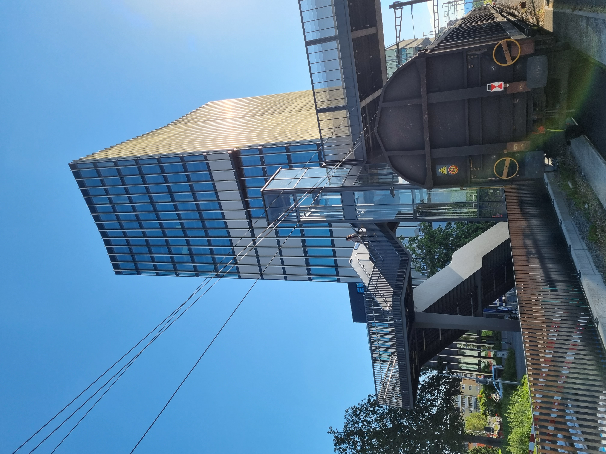
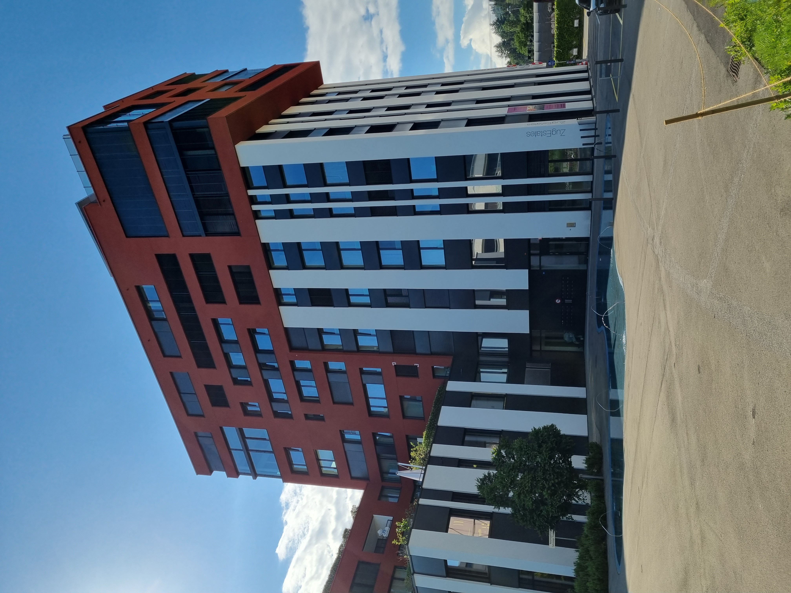

Manually controlled, thermostatic controlled and differential pressure controlled valves correspond
to the most common bypass controlling strategies in existing district heating systems. The manually
operated valves leaves the bypass open, regardless the situation. This results in
a small but constant mass flow rate from the supply line to the return line. The controller
of the thermostat controlled valve opens the bypass if the supply water is getting too cold.
The bypass valve is opened less frequently here, but a slightly larger mass flow rate is used.
Differential pressure controlled valves are closed under normal operation and open when the pressure
difference increases over a setup value due to the closing of the substation two-ways valves as
a consequence of a low heat demand.
Energy meters accounting for energy delivery work measuring temperature difference and mass flow rate
on primary circuit at the substations. The temperature measure is performed at the heat exchanger
inlet and outlet points. The bypass is connected in parallel to the heat exchanger, and therefore
the flow going through it is not measured. This causes sometimes an underestimation of the bypass
effect, which has a rather indirect contribution, like higher heat losses and a decrease in
the central plant efficiency.
The same principles would apply for 5GHDC grids for cooling. During summer operation, cooling
operation with e.g. a lake source needs to maintain a given (maximum) cooling temperature to maintain
enough cooling power. Circulation flow using bypass valves could ensure this temperature requirement
is met.